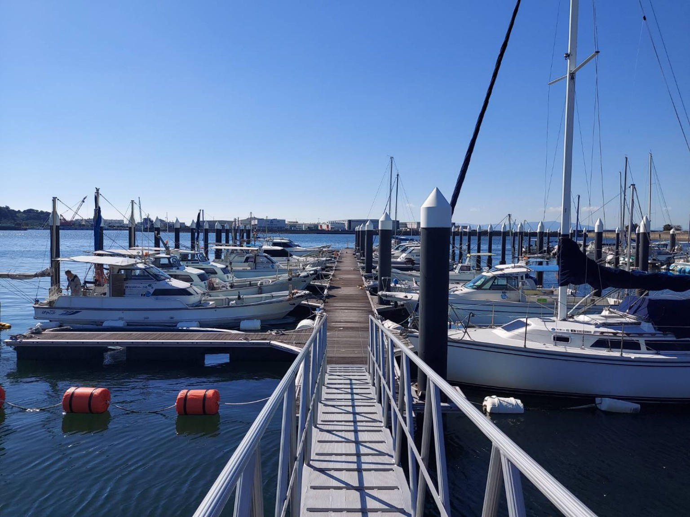
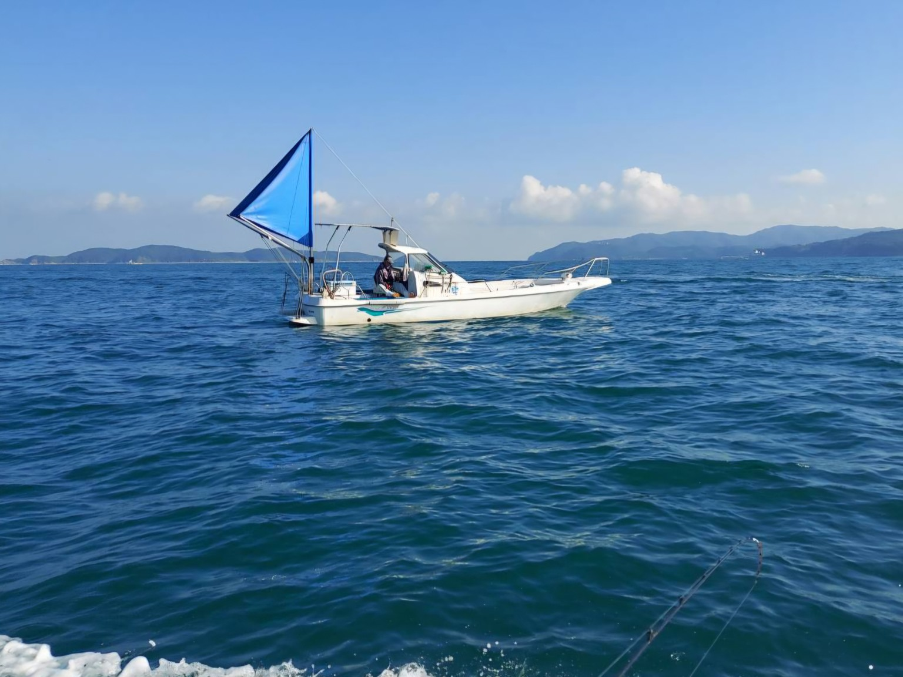
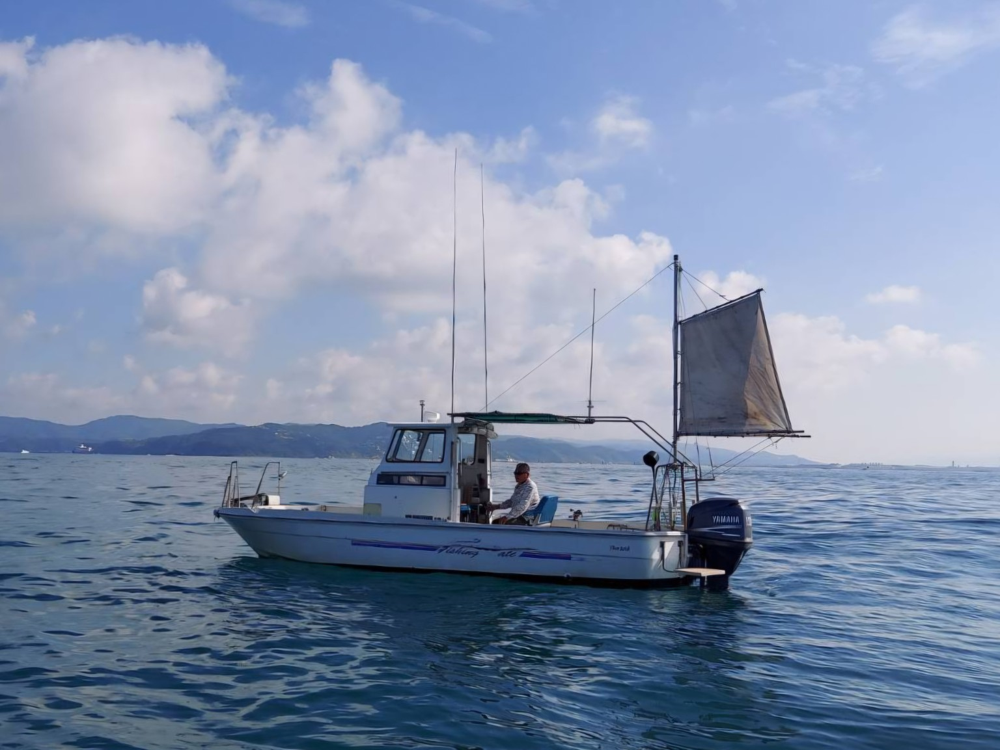
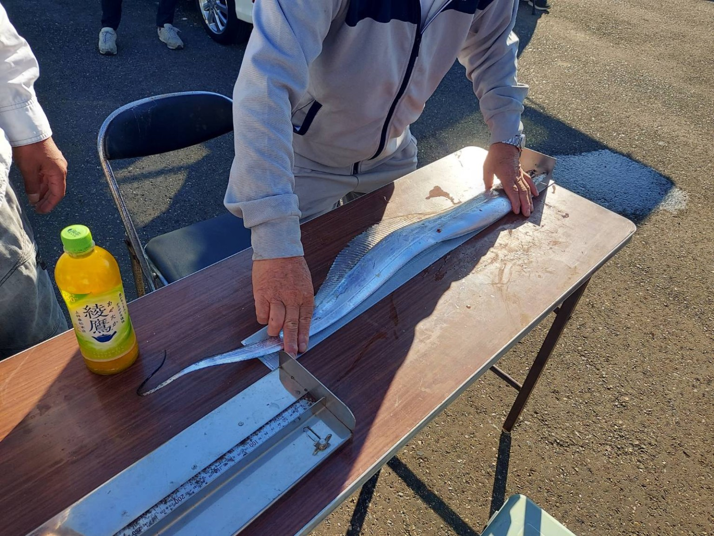
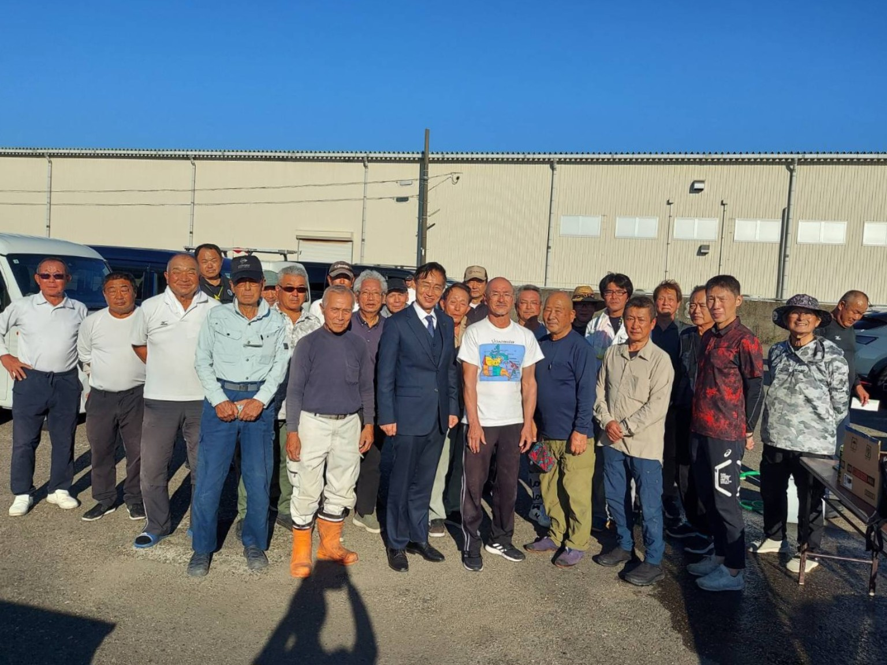
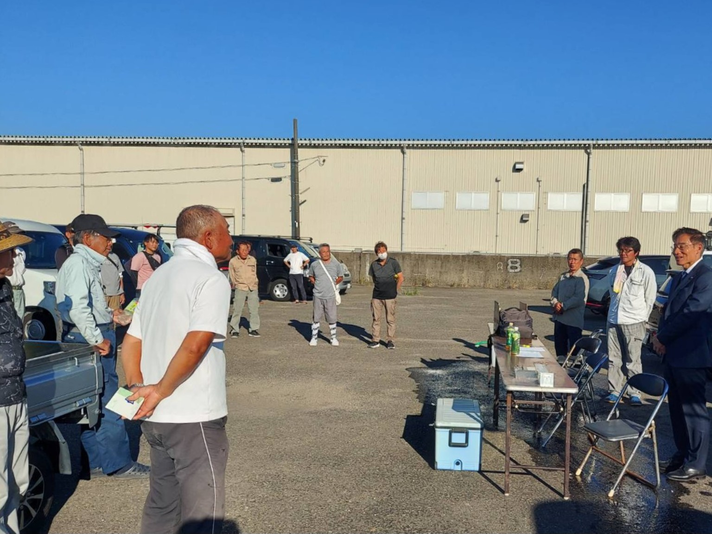
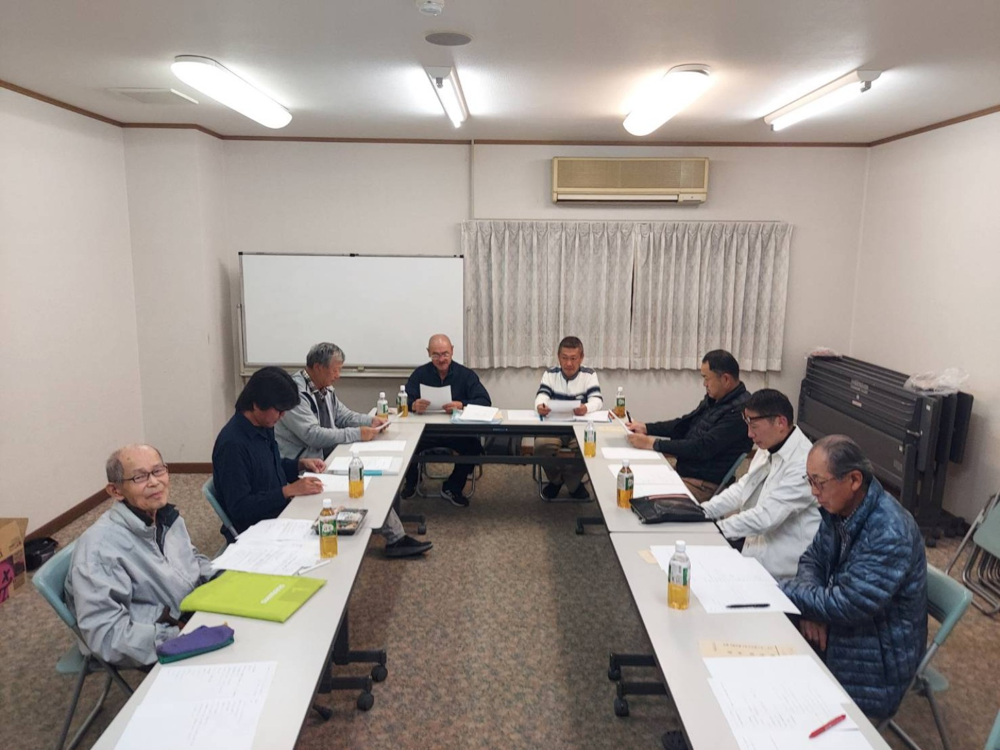
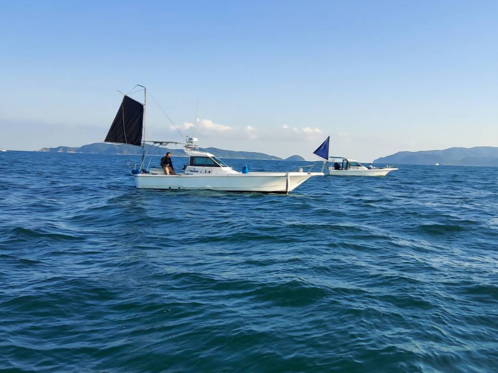

CLUB HISTORY

周辺海域の風景（撮影場所・日時は資料未確認）
雑賀の海から、40年以上。
和歌山雑賀クラブは1981年（昭和56年）の設立です。名称は、発足時に雑賀地区へ船舶を係留していたことに由来します。
2000年頃には最大148名の会員がいました。現在の会員数は37名で、会員の大半は和歌山在住。大阪・奈良在住の会員もいます。
1981設立（昭和56年）
37名現在の会員数
約60歳会員の平均年齢
148名2000年頃の最大会員数
会員数・平均年齢は2026年11月提供の情報です。
OUR STYLE
会の特徴
目的は「仲良く、安全に釣りを楽しむ」こと。年間行事を通じて、情報交換と親睦を深めています。
出航中は助け合い
出航中に船舶の故障などがあった際は、会員同士で助け合って救助します。
釣り情報の共有
グループLINE等で、会員どうしが釣り情報を共有しています。
港・係留施設への意見具申
港湾設備や係留施設の不具合等について、関係機関へ意見を伝え、必要に応じて折衝します。
船舶保険の団体割引
船舶保険の団体割引があります。

TARGET & STYLE
対象魚・釣法
鯛、鯵、青物などを、高仕掛けを中心に釣ります。
- 鯛
- 鯵
- 青物
- タチウオ
- カワハギ
- アオリイカ
- メバル
- アマダイ
橙色は高仕掛けを中心に釣る魚、黒色はその他の対象魚です。
ANNUAL EVENTS
年間行事
- 4月通常総会・懇親会
- 7月夏季釣り大会
- 10月秋季釣り大会
- 11月忘年会11月末
必要に応じて役員会・臨時総会を開きます。具体的な開催日は、決まり次第お知らせします。
GALLERY
釣行ギャラリー






釣果や大会結果の掲載は、情報が確認でき次第行います。
JOIN US
入会案内
新規会員を募集しています。入会条件は船舶を所有していることです。
入会条件船舶所有
入会金10,000円
年会費8,000円
お問い合わせ
お問い合わせ方法は準備中です
公開できる連絡方法が決まり次第、こちらにご案内します。
会長：東